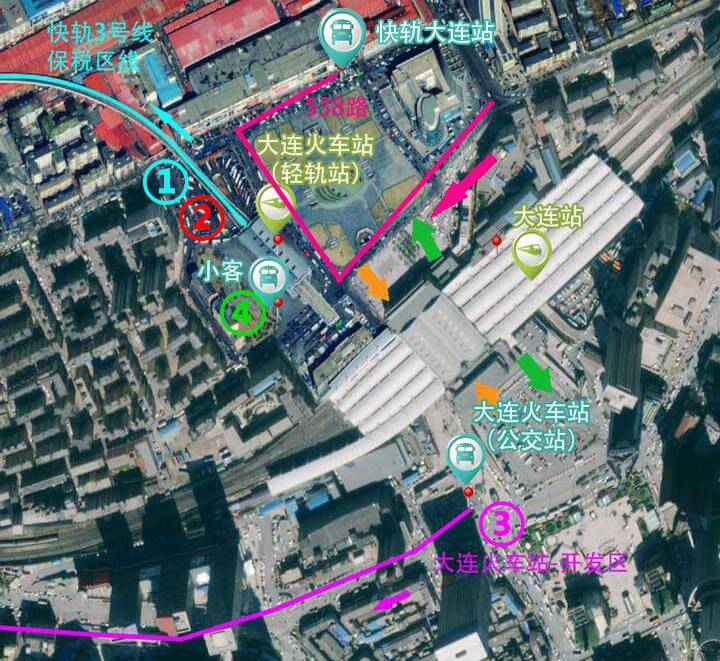
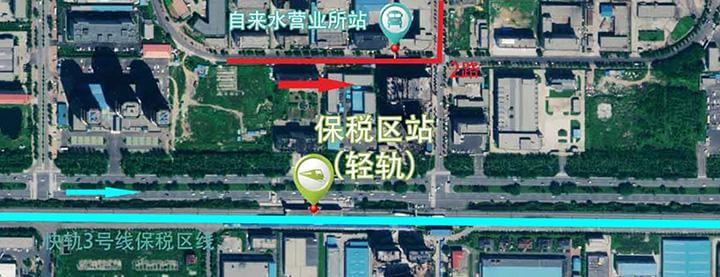
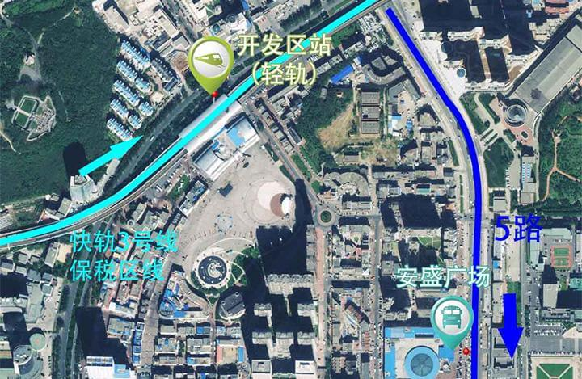

全程约1小时30分钟/35.21公里
起：大连站
步行至快轨站（大连火车站） 215米
(北口进) 乘坐快轨3号线保税区线（或快轨3号线) , 在保税区站下车 8站 末班车 20:30
步行至自来水营业所站 446米
乘坐开发区2路 , 在开发区一中下车 6站 末班车 20:00

全程约1小时30分钟/34.8公里
起：大连站
步行至快轨站（大连火车站） 215米
(北口进) 乘坐快轨3号线保税区线（或快轨3号线) , 在开发区站下车 7站 末班车 20:30
步行至安盛广场
乘坐5路，在职业中专下车 19站 末班车 20:00

起：大连站
乘坐大连火车站-开发区公交车在银帆宾馆（19站）或管委会站（21站）下车 末班车 21:00
乘坐5路到达职业中专下车 末班车 20:00
在小客候车点上车，直达